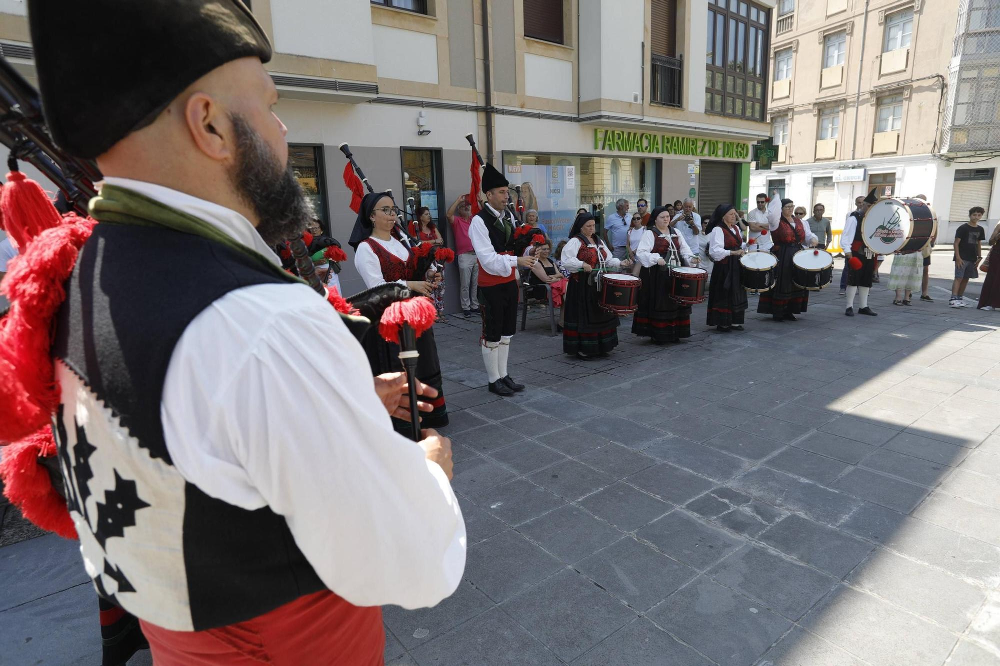

La gran hoguera
La hoguera es el elemento central de las fiestas de San Juan.
Procesión marinera
El santo recorre las calles del pueblo hasta llegar al puerto.

Gaitas y música
La música y las gaitas animan las celebraciones de las fiestas de San Juan.